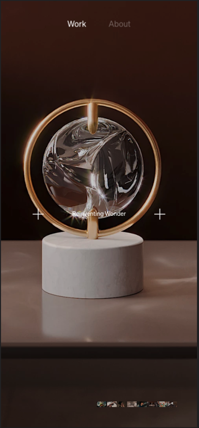
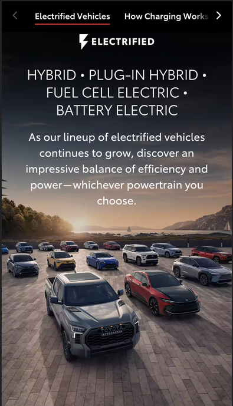
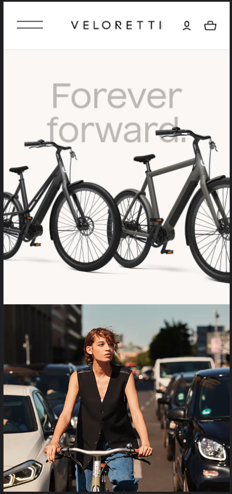

Rule of Thirds
Camille Mormal
https://camillemormal.com/ In my research of the rule of thirds, I found that this is artwork, images and photography shot with the concept of a 3x3 composition grid view of the item. Considering an invisible 3x3 grid, from the image I choose you can see that the main object is centered perfectly towards the middle square with the intent to draw the viewers eyes to the main object.
Visual Hierarchy
Toyota Inc. 2023 Toyota Sequoia TRD Pro
https://www.toyota.com/electrified/ In one of my readings this week it listed 8 principle of visual Hierarchy. Positioning, size, color, contrast, alignment, proximity, typography are the listed principles along with an estimate of 8 seconds that the average person takes to look at something and scan to see if it is intriguing or relevant. I believe this image shows these principles in one image. Starting from the positioning of the vehicles, size and alignment of how they are layed out, colors, and the size of the descriptions is intended to draw your eyes to they type of vehicles electric features.
PARC: Contrast
Veloretti Electric Bikes
https://www.veloretti.com/electric Contrast is often used to point out important details of the product and this is used by manipulating size, color, or content positioning. With contrast you have the ability to draw the users attention to a focused object to what you are presenting. I chose a picture from an electric bike company called Veloretti because you can see how the first part of the page used a black & white them to showcase two models with a grey shaded quote that reminds the client to keep riding. In the second image, you see a black & white car on each side with a girl wearing a black shirt riding one of these bikes around the city.